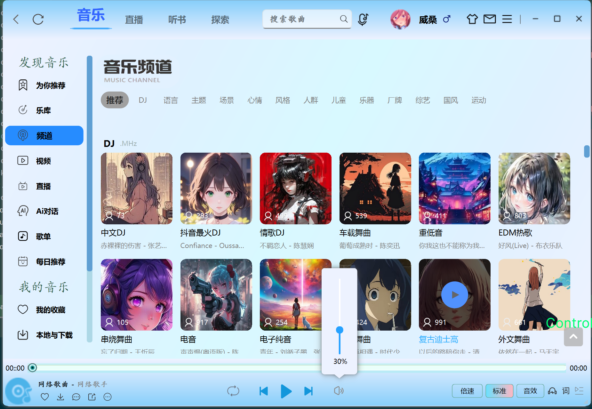
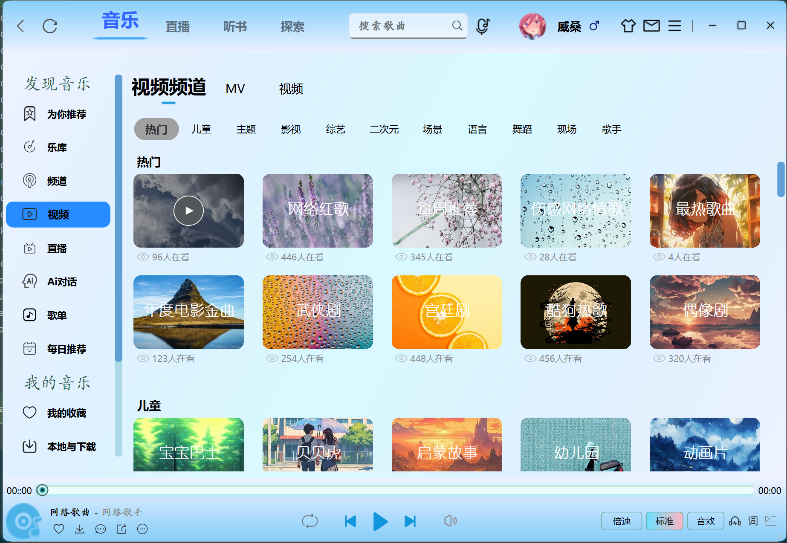
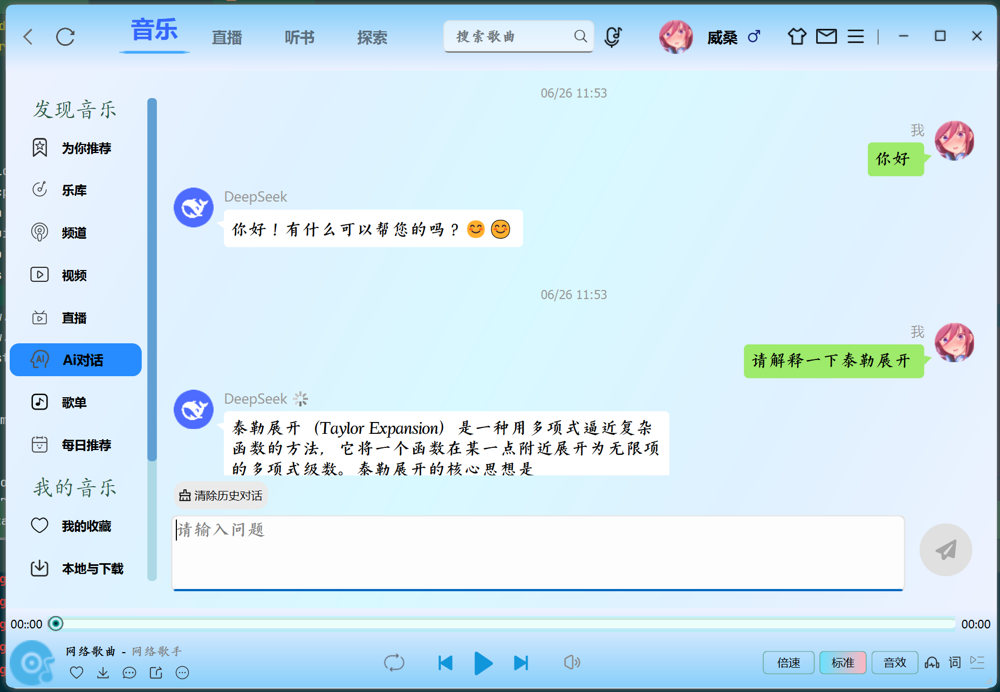
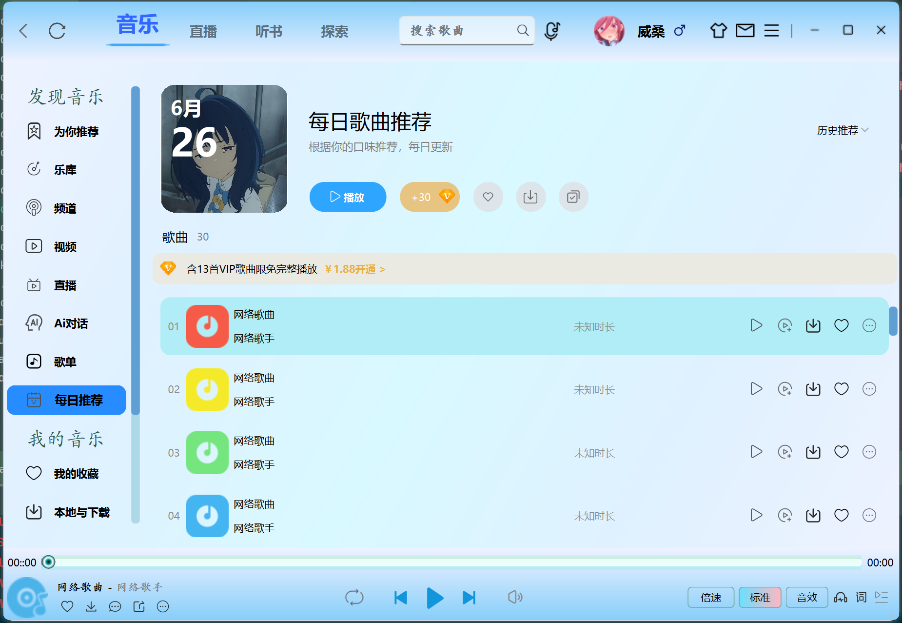
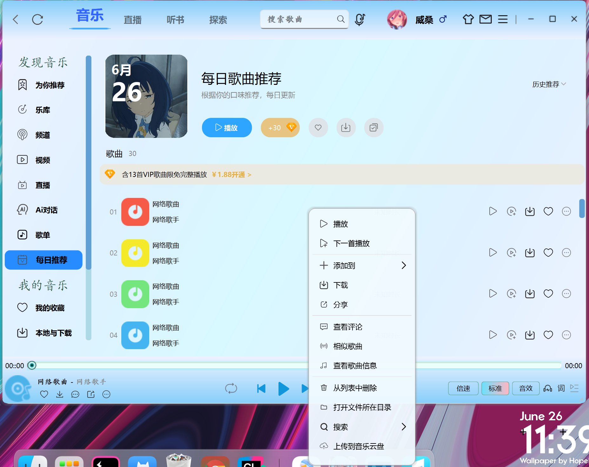
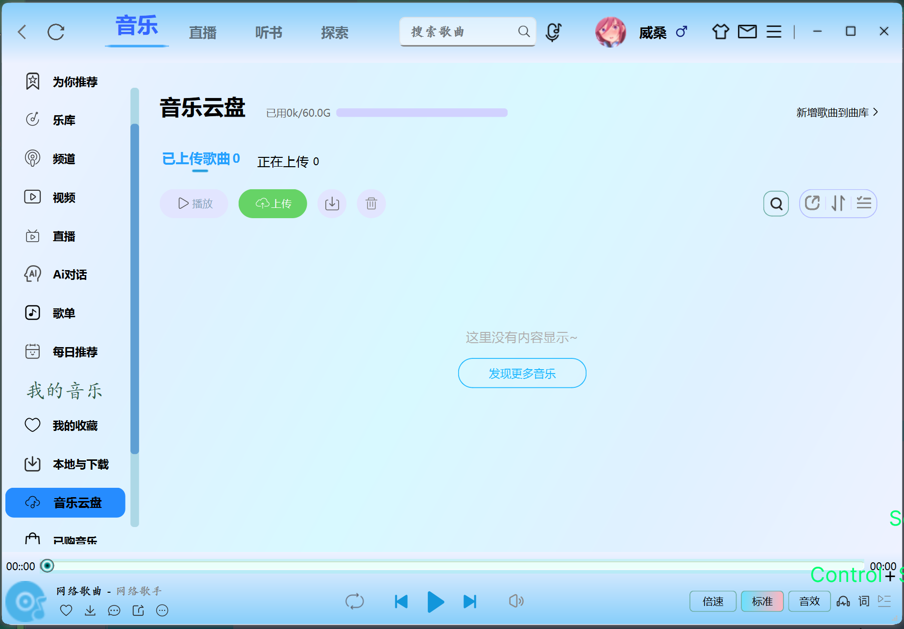
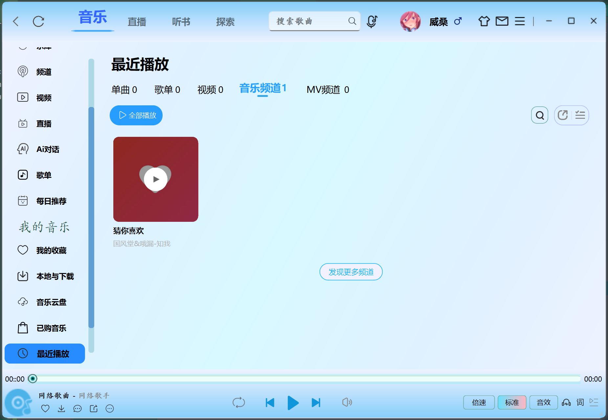
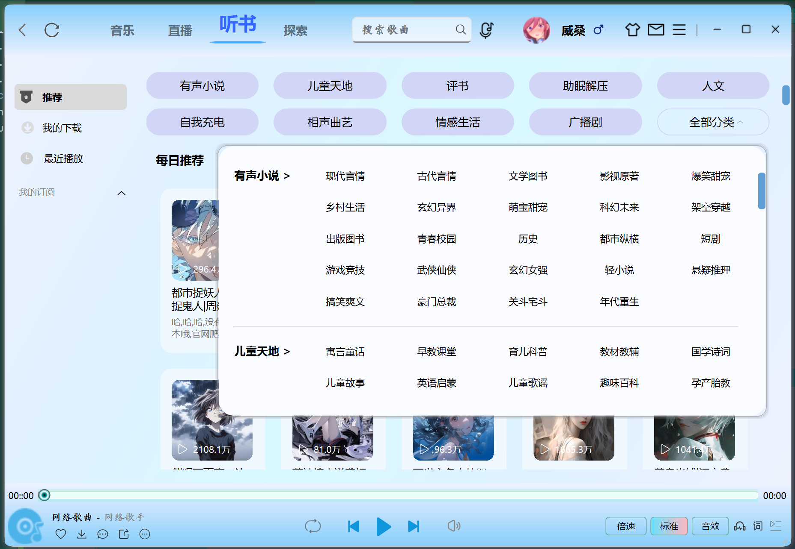
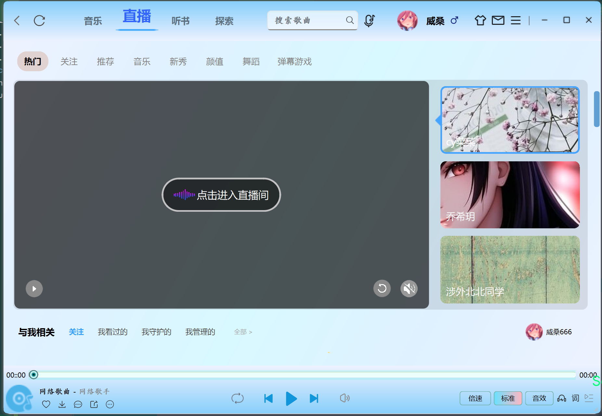

|
KuGouApp beta 0.01
KuGouDocs build by doxygen
|
|
KuGouApp beta 0.01
KuGouDocs build by doxygen
|

🔥
🔥
🎁如果你喜欢该项目，请点击右上角的✨星星✨，你的 Star 是我最大的动力
本项目代码仅限研究和学习使用，资源版权归音乐平台所有
Ubuntu 下如果报错：
请执行以下命令：
| Ubuntu/macOS | Windows | License |
|---|---|---|
Based on Qt Widget + UiTools module + Custom control + QSS + QsLog + Custom Spdlog + JWT + FFmpeg + SDL
使用**CMake**进行模块化管理，确保核心组件（如用户界面、媒体播放器和网络层）的**高度解耦**，参照酷狗客户端，高仿并且优化界面，
应用程序现采用 FFmpeg 和 SDL 进行音频解码与播放来实现音频播放，从而提供更灵活、更强大的音乐播放体验。
集成 QsLog 和自定义 Spdlog 实现健壮的日志系统，使用 JWT 确保安全的用户认证。采用**SQLite**存储音乐元数据（标题/专辑/路径），使用Qt SQL模块实现播放记录管理
通过 QNetworkAccessManager 实现在线音乐流媒体播放，结合 QtConcurrent 和 QFutureWatcher 实现非阻塞线程任务调度，基于 QThreadPool 构建动态弹性线程池，通过 QRunnable 封装任务单元，实现线程资源的自动回收。
项目难点：播放列表、搜索功能、菜单功能，歌词显示、播放控制等**播放器核心功能**设计问题，自定义控件和事件响应，遮罩绘图，控件拉伸，**特效绘制**， 复杂业务逻辑问题，登录注册、**Ai对话**、**数据库连接池**设计、**异步非阻塞式线程**设计、**日志系统**设计、**网络模块**设计、**开源库**（如 FFmpeg 和 SDL）的集成与优化，以提升媒体播放能力。
视觉魔法师：QSS样式引擎 + SVG矢量图标 + 动态渐变蒙版
交互黑科技：属性动画系统 + 智能布局适配
性能保障：双缓冲绘图 + 异步加载 + 局部刷新策略
✅ 支持无损格式直通
✅ 32段可视化均衡器
✅ 动态响度补偿技术














🌈 未来路线图
🛸 AI声纹识别：语音点歌+歌手识别
🌐 P2P音乐共享：分布式音乐网络
🔮 VR演唱会模式：3D音频空间化
🤖 智能推荐引擎：神经网络推荐算法
🔮 魔幻歌词系统
光流动画：仿OLED屏像素渐隐效果 卡拉OK模式：逐字染色+波形同步 双语对照：智能歌词时间轴对齐